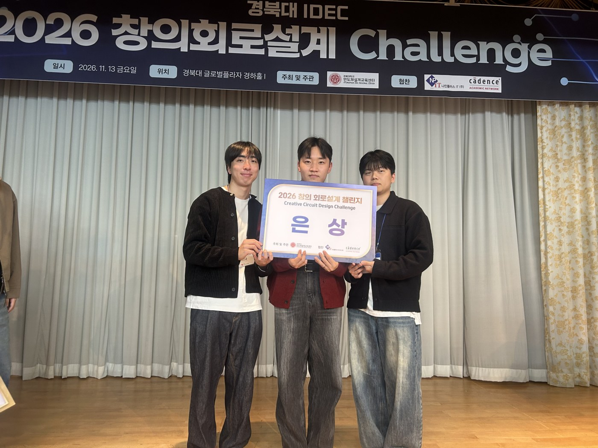

Silver at the Creative Circuit Design Challenge
이동규, 이민규, 신준수 won silver in the analog category at Kyungpook National University IDEC for their high-precision solar tracking system. The design uses eight optical sensing channels with transimpedance amplifiers.
View the award announcement (PDF, Korean)